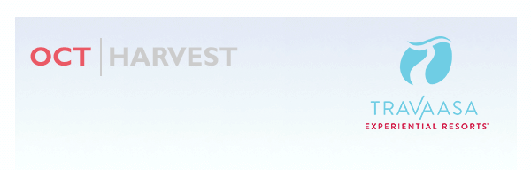

I was on a tour of our Farm in Austin with our farmer Kim recently, and she handed me a cherry tomato picked right from the vine. I don’t like tomatoes. I held it while everyone around me popped one in their mouth, and gushed over the flavor. Under peer pressure and wanting to support the effort, I took a bite and was shocked to discover that I’ve been wrong all these years. I do like tomatoes. I felt like the curmudgeon in Green Eggs and Ham.
October is Harvest Month at Travaasa Experiential Resorts®. Our farm in Austin is cranking out food for our restaurant and our So Fresh and So Green food truck. Our new chef, Marko Ellinger, is teaming up with chef Ben to bring more classes and new dishes to Jean’s Kitchen. In Hana, Derek Watanabe joins us as executive chef with 24 years of experience and a passion for bringing local flavors to the plate. And if you’ve been to Hana, you know how the flavor bursts from the local fare in our little paradise.
Finally, I have to mention our new bike pump track in Austin. If you’ve never been on a pump track, it’s riding a roller coaster on a mountain bike. Not only is it exhilarating, it’s great technical training and a solid workout.
Come enjoy the harvest with us at Travaasa this October. We hope to see you soon.

THIS MONTH |
 |
Better than fine dining, that’s for sure! The newest program lets guests harvest their own bounty from Travaasa Farm and then return to the kitchen to see the culinary team work its magic and create the ultimate farm-to-table feast. Bon appétit! more |
|
This fall, Travaasa Austin is offering a specialized spa treatment using the season’s freshest ingredients straight from the Travaasa Farm! Let the skilled estheticians at Travaasa Austin refresh and revitalize your skin with our Fall Harvest Facial. more |
 |
Building a community of trustworthy people, who love horses and our country, and want to continue to serve—that’s what The Joyful Horse Project and our veterans program is about—and we’ve got an inside look at how the program works. more |
 |
Chef Marko Ellinger has been reinventing his culinary innovation for over 30 years to the delight of international audiences and noted celebrities. Travaasa is excited to have Chef Marko join the team, with his exciting past as a performance artist, cookbook author, television personality and contemporary chef. more |
 |
Travaasa Austin’s newest adventure experience, the Bicycle Pump Track, looks like a scary maze of bumps and curves. We’ve got a behind-the-scenes look at how the track was designed and built by the man in charge—Joshua Congleton, aka Hippie Josh and owner of Trail Pirate. more |
“A very special place. The hotel and staff are amazing!!! The hotel has been my getaway for about 25 years and the experience there is unique and extraordinary!!!!” - Jake R., from San Francisco, CA, sharing his experience at Travaasa Hana |
ON THE HORIZON
This November, Stop the Annual Holiday Rush
It’s that time of year when your desk calendar fills up and your free time is spent planning trips and shopping for everyone on your list! Stop the hustle and bustle of the season, and reconnect with your inner peace at Travaasa. Refresh your chi in Restorative Pilates in Austin, or feel the burn in a challenging Isometric Circuit Training course in Hana. Enter Travaasa Austin’s Wacky Turkey Shoot or join us at Travaasa’s Wild Arena Track for T1 Races. Enjoy our Holiday Tasting Series and learn how to make the perfect holiday meal. Get even more tips to impress your guests in our Holiday Table course.
Joyous December
While the holidays sometimes have a tendency to overwhelm us, the holiday season also brings an incredible amount of joy as we are surrounded by family and friends during such a special time of year.
At Travaasa, we’ve named December Joy Month in honor of the celebration that surrounds the holiday season. With so many opportunities to harness the magic, Travaasa is the perfect place to spend the holidays with the ones you love.
|
|